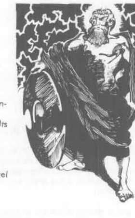

阿喀琉斯、安泰俄斯、阿佛洛狄忒与阿波罗 · Achilles、Antaeus、Aphrodite 与 Apollo
Achilles（阿喀琉斯） 是中立善良英雄，AC 0，90 点生命值，15 级战士。他穿 +2 链甲、持 +2 盾牌，驾驭不朽战马；除左脚跟外，锐器无法刺穿他的皮肤。
Antaeus（安泰俄斯） 是混乱邪恶巨人，来自 Poseidon 与大地女神 Gaia。只要双脚接触土地，他每轮战斗都会变得更大更强，最多增加 250 点生命值；一旦被抬离地面便失去力量且无法再生。
Aphrodite（阿佛洛狄忒） 是混乱善良爱、美与激情女神，AC 4，259 点生命值。她能魅惑男女，并让曾对她魅惑豁免成功的人永远无法再次攻击她；挥手即可对想伤害她的生物造成 1–10 点伤害。Apollo（阿波罗） 掌管太阳、预言、音乐与射术，拥有保护性迷雾、强力弓术和治愈能力，可变形、把肉体变成石头或治疗严重伤口。

上一节：埃癸斯与宙斯 · Aegis 与 Zeus
下一节：阿瑞斯、阿耳忒弥斯、雅典娜与英雄 · Ares、Artemis、Athena 与英雄